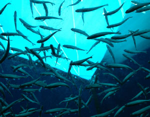

Our mismanaged world economy today has many of the characteristics of a Ponzi scheme. A Ponzi scheme takes payments from a broad base of investors and uses these to pay off returns. It creates the illusion that it is providing a highly attractive rate of return on investment as a result of savvy investment decisions when in fact these irresistibly high earnings are in part the result of consuming the asset base itself. A Ponzi scheme investment fund can last only as long as the flow of new investments is sufficient to sustain the high rates of return paid out to previous investors. When this is no longer possible, the scheme collapses - just as Bernard Madoff’s $65 billion investment fund did in December 2008.
Although the functioning of the global economy and a Ponzi investment scheme are not entirely analogous, there are some disturbing parallels. As recently as 1950 or so, the world economy was living more or less within its means, consuming only the sustainable yield, in the interest of the natural systems that support it. But then as the economy doubled, and doubled again, and yet again, multiplying eightfold, it began to outrun sustainable yields and consume the asset base itself.
In a 2002 study published by the U.S. National Academy of Sciences, a team of scientists concluded that humanity’s collective demands first surpassed the Earth’s regenerative capacity around 1980. As of 2009, global demands on natural systems exceed their sustainable yield capacity by nearly 30 percent. This means we are meeting current demands in part by consuming the Earth’s natural assets, setting the stage for an eventual Ponzi-type collapse when these assets are depleted.
As of mid-2009, nearly all of the world’s major aquifers were being overpumped. We have more irrigation water than before the overpumping began, in true Ponzi fashion. We get the feeling that we’re doing very well in agriculture, but the reality is that an estimated 400 million people are today being fed by overpumping, a process that is by definition short-term. With aquifers being depleted, this water-based food bubble is about to burst.
A similar situation exists with the melting of mountain glaciers. When glaciers first start to melt, flows in the rivers and the irrigation canals they feed are larger than before the melting started. But after a point, as smaller glaciers disappear and larger ones shrink, the amount of ice melt declines and the river flow diminishes. Thus we have two water-based Ponzi schemes running parallel in agriculture.
And there are more such schemes. As human and livestock populations grow more or less apace, the rising demand for forage eventually exceeds the sustainable yield of grasslands. As a result, the grass deteriorates, leaving the land bare, allowing it to turn to desert. In this Ponzi scheme, herders are forced to rely on food aid, or they migrate to cities.
Three fourths of oceanic fisheries are now being fished at or beyond capacity, or are recovering from overexploitation. If we continue with business as usual, many of these fisheries will collapse. Overfishing, simply defined, means we are taking fish from the oceans faster than they can reproduce. The cod fishery off the coast of Newfoundland in Canada is a prime example of what can happen. Long one of the world’s most productive fisheries, it collapsed in the early 1990s and may never recover.
Paul Hawken, author of Blessed Unrest, puts it well: “At present we are stealing the future, selling it in the present, and calling it gross domestic product. We can just as easily have an economy that is based on healing the future instead of stealing it. We can either create assets for the future or take the assets of the future. One is called restoration and the other exploitation.” The larger question is, If we continue with business as usual - with overpumping, overgrazing, overplowing, overfishing, and overloading the atmosphere with carbon dioxide - how long will it be before the Ponzi economy unravels and collapses? No one knows. Our industrial civilization has not been here before.
Unlike Bernard Madoff’s Ponzi scheme, which was set up with the knowledge that it would eventually fall apart, our global Ponzi economy was not intended to collapse. It is on a collision path because of market forces, perverse incentives and poorly chosen measures of progress.
In addition to consuming our asset base, we have devised some clever techniques for leaving costs off the books - much like the disgraced and bankrupt Texas-based energy company Enron did some years ago. For example, when we use electricity from a coal-fired power plant, we get a monthly bill from the local utility. It includes the cost of mining coal, transporting it to the power plant, burning it, generating the electricity, and delivering electricity to our homes. It does not, however, include any costs of the climate change caused by burning coal. That bill will come later - and it will likely be delivered to our children. Unfortunately for them, their bill for our coal use will be even larger than ours.
When Sir Nicholas Stern, former chief economist at the World Bank, released his groundbreaking 2006 study on the future costs of climate change, he talked about a massive market failure. He was referring to the failure of the market to incorporate the costs of climate change in the price of fossil fuels. According to Stern, the costs are measured in trillions of dollars. The difference between the market prices for fossil fuels and an honest price that also incorporates their environmental costs to society is huge.
As economic decision-makers, we all depend on the market for information to guide us, but the market is giving us incomplete information, and as a result, we are making bad decisions. One of the best examples of this can be seen in the United States, where the gasoline pump price was around $3 per gallon in mid-2009. This reflects only the cost of finding the oil, pumping it to the surface, refining it into gasoline, and delivering the gas to service stations. It overlooks the costs of climate change as well as the costs of tax subsidies to the oil industry, the burgeoning military costs of protecting access to oil in the politically unstable Middle East, and the health care costs of treating respiratory illnesses caused by breathing polluted air. These indirect costs now total some $12 per gallon. In reality, burning gasoline is very costly, but the market tells us it is cheap.
The market also does not respect the carrying capacity of natural systems. For example, if a fishery is being continuously overfished, the catch will eventually begin to shrink and prices will rise, encouraging even more investment in fishing trawlers. The inevitable result is a precipitous decline in the catch and the eventual collapse of the fishery.
Today we need a realistic view about the relationship between the economy and the environment. We also need, more than ever before, political leaders who can see the big picture. And because the principal advisers to government are economists, we need either economists who can think like ecologists or more ecological advisers. Otherwise, market behavior - including its failure to include the indirect costs of goods and services, to value nature’s services, and to respect sustainable-yield thresholds - will cause the destruction of the economy’s natural support systems, and our global Ponzi scheme will fall apart.
|
 ISTOCKPHOTO/YEN-HUNG WANG Three fourths of oceanic fisheries are now being fished at or beyond capacity, or are recovering from overexploitation. If we continue with business as usual, many of these fisheries will collapse. |
|
|